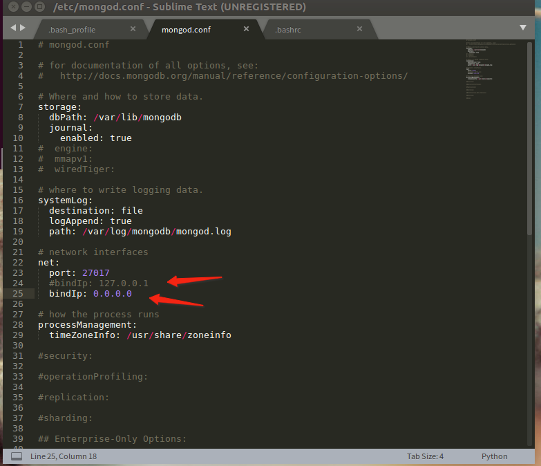
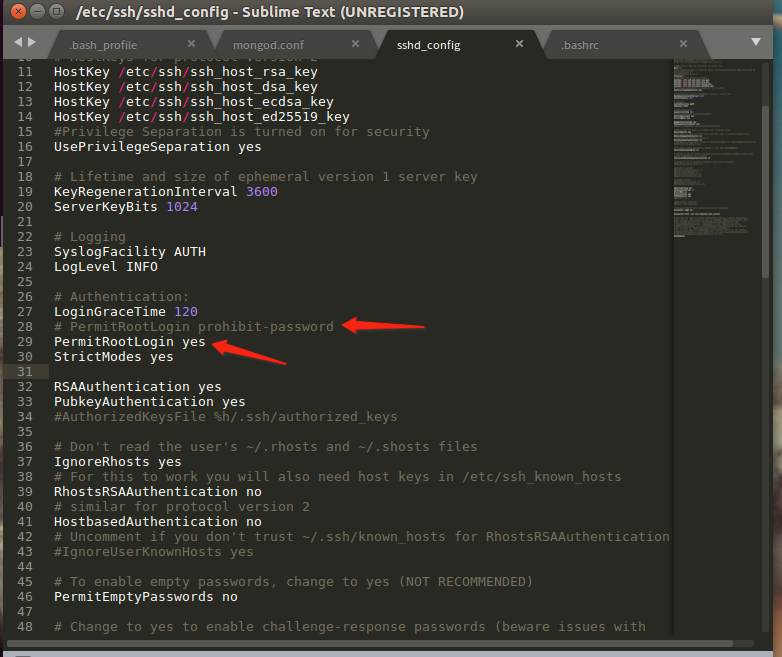
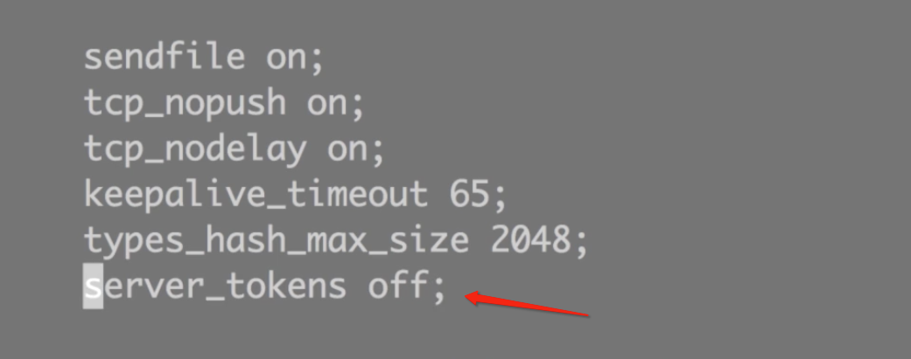

Ubantu-record
显示所有命令的别名
alias
mongodb官方安装
https://docs.mongodb.com/manual/tutorial/install-mongodb-on-ubuntu/
nvm安装
最新版本获取 https://github.com/creationix/nvm
安装
wget -qO- https://raw.githubusercontent.com/creationix/nvm/v0.34.0/install.sh | bash安装node
nvm install v8.11.3
重新打开一个连接
nvm use v8.11.3
nvm alias default v8.11.3
node -v
升级npm (可跳过)
npm --registry=https://registry.npm.taobao.org install -g npm使用 cnpm 别名
alias cnpm="npm --registry=https://registry.npm.taobao.org \ --cache=$HOME/.npm/.cache/cnpm \ --disturl=https://npm.taobao.org/dist \ --userconfig=$HOME/.cnpmrc"(可跳过)
echo fs.inotify.max_user_watches=524288 | sudo tee -a /etc/sysctl.conf && sudo sysctl -p
- 安装pm2
npm --registry=https://registry.npm.taobao.org install -g pm2
关闭防火墙
- 命令查看开启防火墙后的状态为active 说明防火墙开启成功。
sudo ufw status
关闭ubuntu的防火墙
sudo ufw disable
开启防火墙
sudo ufw enable
更改mongodb 配置文件 远程能访问

Linux root用户不能通过SSH连接的问题
https://www.cnblogs.com/kuillldan/p/7396207.html 
安装Nginx
sudo apt-get install nginx
cd /etc/nginx/conf.d
sudo vim stonemovie-8080.conf
upstream imooc {
server 127.0.0.1:8080;
}
server {
listen 80;
server_name 192.168.1.104;
location / {
proxy_set_header X-Real-IP $remote_addr;
proxy_set_header X-Forward-For $proxy_add_x_forwarded_for;
proxy_set_header Host $http_host;
proxy_set_header X-Nginx-Proxy true;
proxy_pass http://imooc;
proxy_redirect off;
}
}
# 检测代码是否正确
sudo nginx -t
sudo nginx -s reload
/etc/nginx/nginx.conf 隐藏服务器信息

测试代码 app.js
var http = require('http');
http.createServer(function (request, response) {
// 发送 HTTP 头部
// HTTP 状态值: 200 : OK
// 内容类型: text/plain
response.writeHead(200, {'Content-Type': 'text/plain'});
// 发送响应数据 "Hello World"
response.end('Hello World\n');
}).listen(8888);
// 终端打印如下信息
console.log('Server running at http://127.0.0.1:8888/');
pm2 启动 app.js
pm2 start app.js
## 列出 所有服务
pm2 list
## 查看摸个服务信息
pm2 show app
## 查看log
pm2 logs
解决 manpath: can't set the locale; make sure $LC_* and $LANG are correct
sudo vi /etc/default/locale 改为如下
LANG=en_US.UTF-8
LC_ALL=en_US.UTF-8